Dinsdag t/m donderdag
€38,50
per persoon
Kinderen 2 t/m 10 jaar: € 2,50 per levensjaar
Wokrestaurant in Lunetten, Utrecht
Tweeënhalf uur lang kiezen wat je wilt, en het meeste wordt voor je ogen gewokt. Bier, wijn, fris, koffie en thee zitten bij de prijs.
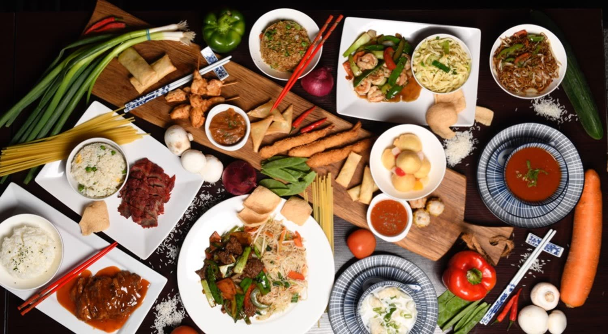
2,5 uur
Je betaalt niet per gerecht, maar een vaste prijs voor tweeënhalf uur eten en drinken. In die tijd kies je helemaal naar eigen smaak.
Je hebt een enorme keuze uit warme voorgerechten, vlees- en visgerechten en een ruime keuze aan desserts. De meeste gerechten worden met dagverse ingrediënten voor je ogen bereid, precies zoals jij ze wilt: live show cooking.
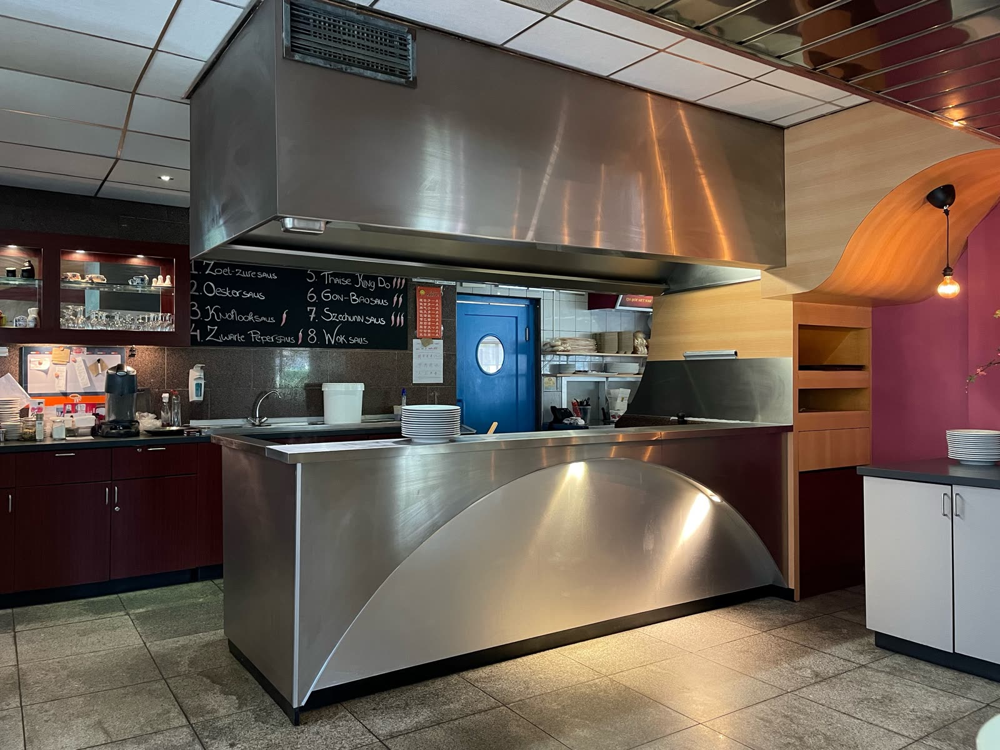
Wok all you can eat & drink, per persoon, voor 2,5 uur.
€38,50
per persoon
Kinderen 2 t/m 10 jaar: € 2,50 per levensjaar
€41,50
per persoon
Kinderen 2 t/m 10 jaar: € 3,00 per levensjaar
Honderd mensen, honderd smaken. Aan het wokbuffet zijn de mogelijkheden onbegrensd, maar deze punten raden we je graag aan.
Inktvis, tongfilet, peultjes, Chinese kool, broccoli, waterkastanjes en bamboescheuten
met zwarte bonensaus licht pikant of zwarte pepersaus pikantGarnalen, visfilet, prei, champignons, waterkastanjes en Chinese champignons
met knoflooksaus licht pikant of Gon Bao saus pikantVisballetjes, Chinese kool, wortel, paprika, Spaanse uien, taugé en broccoli
met knoflooksaus niet pikantKip, wortel, Chinese kool, bloemkool en waterkastanjes
met zoetzure saus niet pikantKip, witte kool, Spaanse uien, prei, bamboe en wortel
met oestersaus niet pikantRunderhaas, Chinese champignons, peultjes, Spaanse uien, bamboescheuten en wortel
met zwarte pepersaus pikantRunderhaas, Chinese kool, champignons, wortel en Spaanse uien
met oestersaus niet pikant of zwarte bonensaus licht pikantVarkensvlees, Chinese kool, paprika, Spaanse uien, komkommer en prei
met oestersaus niet pikantVarkensvlees, Chinese kool, waterkastanje, ananas en Spaanse uien
met Thaise King-Do saus pikantTaugé, prei, Spaanse uien, paprika, komkommer, wortel, broccoli en peultjes
met knoflooksaus niet pikant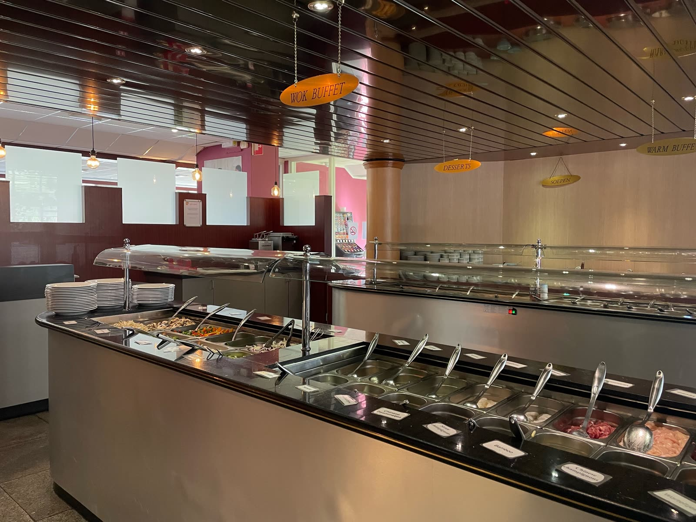
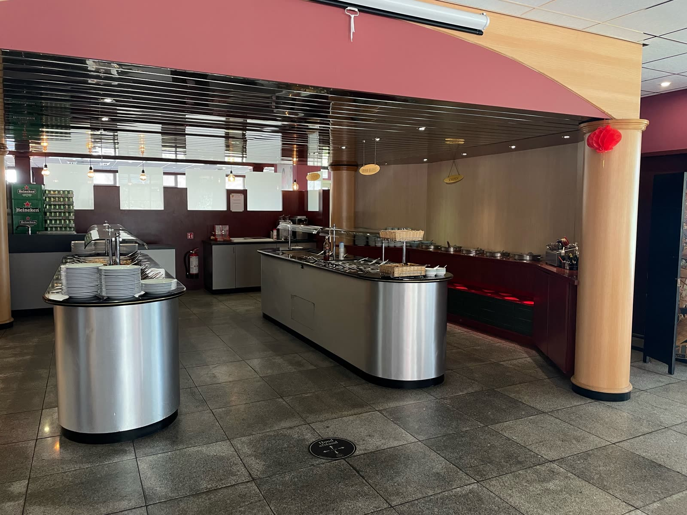
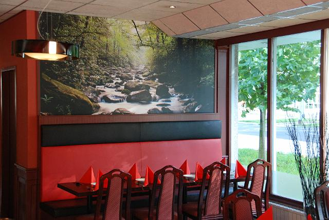
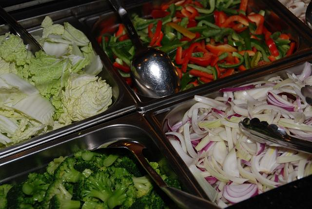
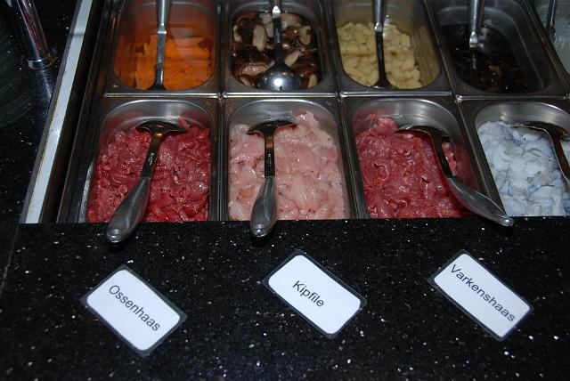
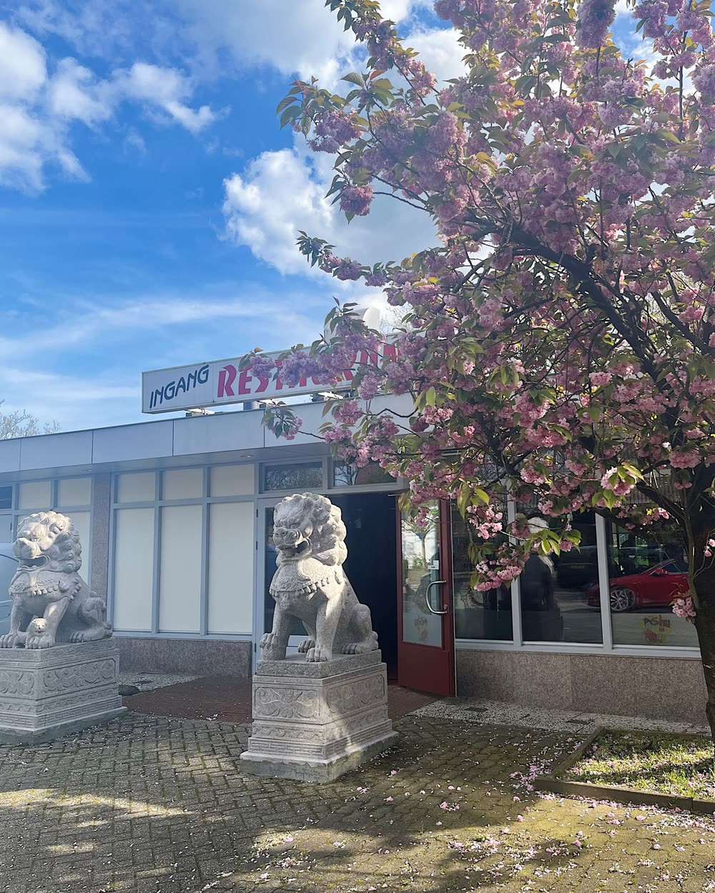
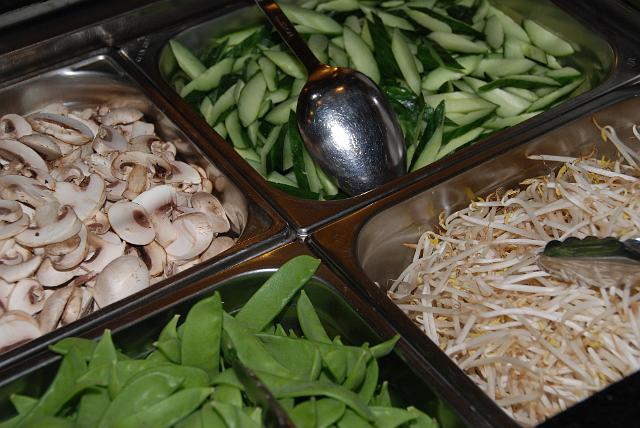
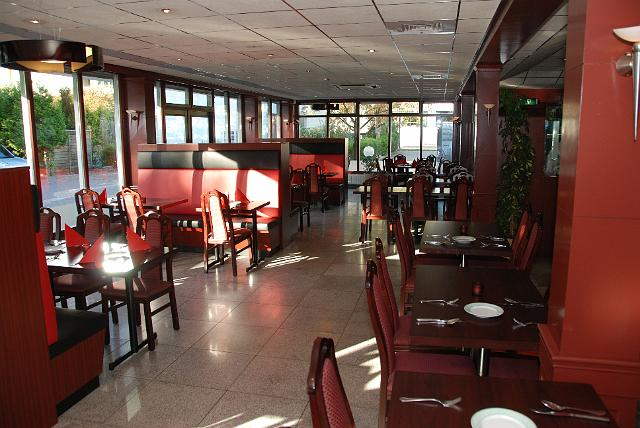
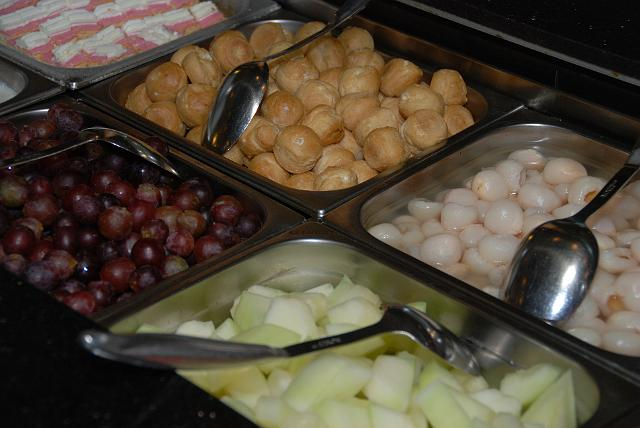
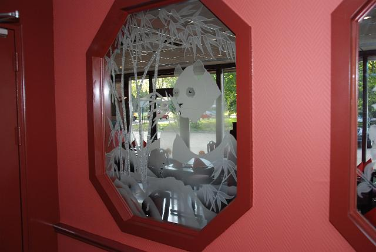
Iets te vieren? Een personeelsfeest, bruiloft, verjaardag of jubileum? We brengen lekker eten naar je toe, thuis of op locatie, privé of zakelijk. Wij nemen de zorgen uit handen, jij hebt alle aandacht voor je gasten.
Hoeveel gasten komen er? Hapjes of een buffet? Snacks of een culinair Chinees buffet? Vleeseters of vegetariërs? Bijna alles is mogelijk. Neem contact op, dan overleggen we hoe je feest een succes wordt.
De lekkerste belegde broodjes van Utrecht!
Een vergadering, evenement of andere activiteit? We maken allerlei belegde broodjes, naar jouw wens, en bezorgen ze op locatie. Jij hoeft alleen je wensen door te geven.
Vragen of een afspraak maken? Langskomen om alles te bespreken kan ook.
030 289 73 98 info@shu-shu.nl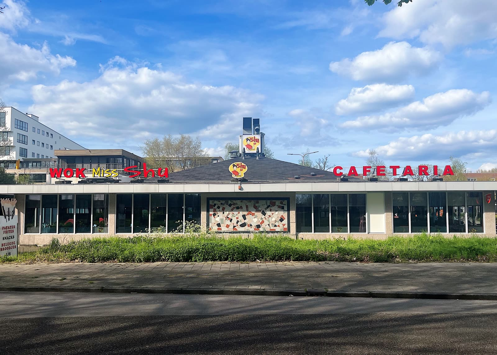
In hetzelfde pand zit Cafetaria Shu: patat, snacks, belegde broodjes, ijs en Chinese fast food om mee te nemen. Elke dag open.
| Maandag t/m vrijdag | 11.30 – 23.30 |
|---|---|
| Zaterdag en zondag | 11.30 – 23.00 |
Let op: de Chinese keuken is open tot 23.00 uur.
| Maandag | geslotenfeestdagen 16.30 – 22.00 |
|---|---|
| Dinsdag | geslotenfeestdagen 16.30 – 22.00 |
| Woensdag | 16.30 – 22.00 |
| Donderdag | 16.30 – 22.00 |
| Vrijdag | 16.30 – 22.30 |
| Zaterdag | 16.30 – 22.30 |
| Zondag | 16.30 – 22.30 |
| Feestdagen | 16.30 – 22.30 |
Amerongseberg 89
3524 LN Utrecht (Lunetten)
We liggen tegenover het BP-tankstation, vlak bij de ring Utrecht-Zuid. Kies waar je vandaan komt: